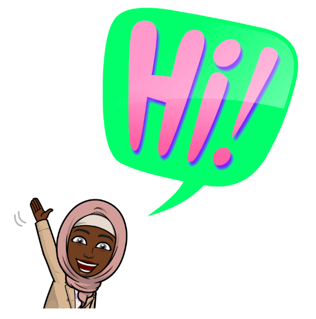

Hi👋, I'm Iman
I'm Iman
I'm an aspiring fullstack developer based in Birmingham.
This page will showcase the skills i've learnt soo far.
Click on the images to be taken to each of my projects.


I'm Iman
I'm an aspiring fullstack developer based in Birmingham.
This page will showcase the skills i've learnt soo far.
Click on the images to be taken to each of my projects.